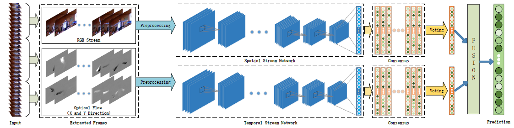
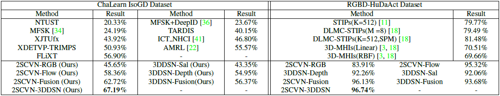
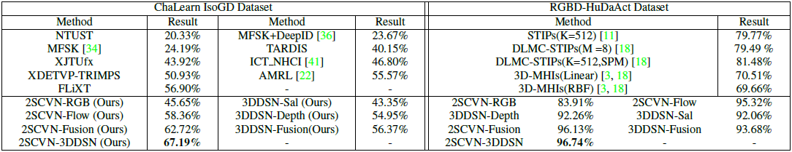
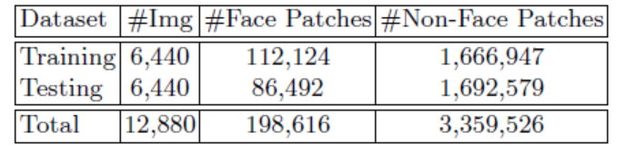
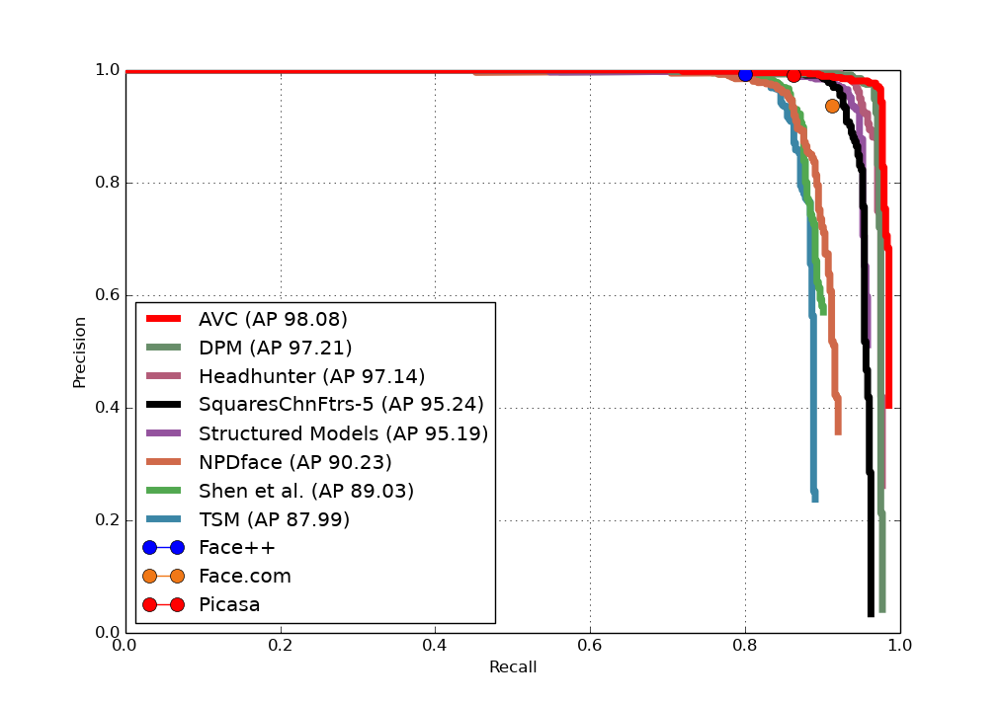

Publications



Multi-Modality Fusion based on Consensus-Voting and 3D Convolution for
Isolated Gesture Recognition
We propose a convolutional two-stream consensus voting network (2SCVN) which explicitly models both the short-term and long-term structure of
the RGB sequences. To alleviate distractions from background, a 3d depth-saliency ConvNet stream (3DDSN) is
aggregated in parallel to identify subtle motion characteristics. These two components in an unified framework significantly improve the recognition accuracy. On the challenging Chalearn IsoGD benchmark, our proposed method
outperforms the first place on the leader-board by a large
margin (10.29%) while also achieving the best result on
RGBD-HuDaAct dataset (96.74%).
Jiali Duan, Shuai Zhou, Jun Wan, Xiaoyuan Guo, and Stan Z. Li
CVPR 2017 (Submitted)



Face Classification: A Specialized Benchmark Study
We conduct a specialized
benchmark study in this paper, which focuses on face classifica
tion. We start with face proposals, and build a benchmark dataset with
about 3.5 million patches for two-class face/non-face classification. Results with several baseline algorithms show that, without the help of
post-processing, the performance of face classification itself is still not
very satisfactory, even with a powerful CNN method. We’ll release this
benchmark to help assess performance of face classification only, and ease
the participation of other related researchers.
Jiali Duan, Shengcai Liao, Shuai Zhou, and Stan Z. Li
CCBR 2016 (Best Student Paper)


Face Detection by Aggregating Visible Components
In this paper, we propose a novel face detection method called
Aggregating Visible Components (AVC), which addresses pose variations
and occlusions simultaneously in a single framework with low complexi-
ty. The main contributions of this paper are: (1) By aggregating visible
components which have inherent advantages in occasions of occlusions,
the proposed method achieves state-of-the-art performance using only
hand-crafted feature; (2) Mapped from meanshape through component-
invariant mapping, the proposed component detector is more robust to
pose-variations (3) A local to global aggregation strategy that involves
region competition helps alleviate false alarms while enhancing localiza-
tion accuracy.
Jiali Duan, Shengcai Liao, Xiaoyuan Guo, and Stan Z. Li
ACCV Workshop 2016 (Oral)

{kind=link}
{kind=link}
{kind=link}
{kind=link}
{kind=link}
{kind=link}
{kind=link}
{kind=link}
{kind=link}
{kind=link}
{kind=link}
{kind=link}
{kind=link}
{kind=link}
{kind=link}
{kind=link}
{kind=link}
{kind=link}
{kind=link}
{kind=link}
{kind=link}
{kind=link}
{kind=link}